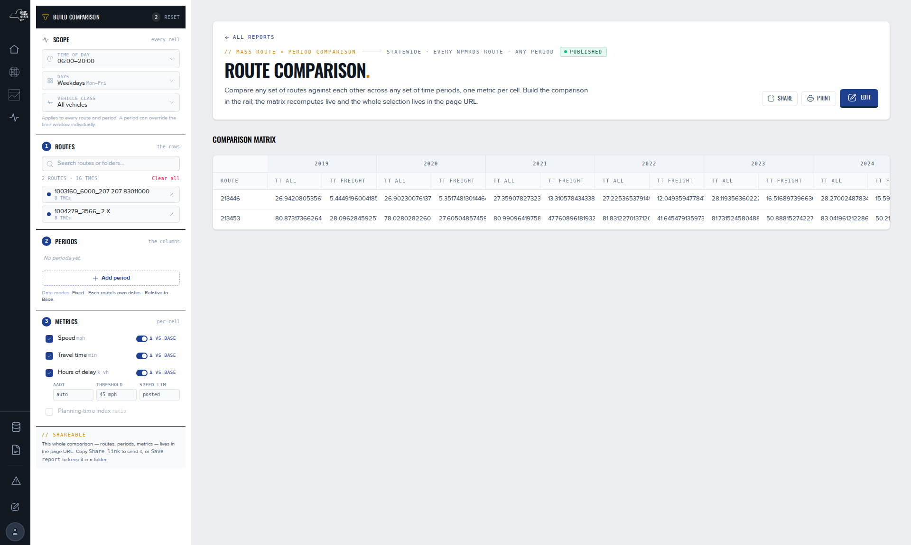

Compare routes across periods.
Route Comparison puts many saved routes against many time periods in one table, one metric per cell, with one period as the base. It is a draft: the builder rail and the matrix render, but only the route step drives the table today. This page says what works now and what the design adds.
Before you start
Route Comparison is not in the NPMRDS side navigation. The Route comparison. section of the NPMRDS home links to it, and its address is /route_comparison. It is a draft tool built in July and August 2026 to replace the earlier Batch Reports: the page exists and renders real data, but the period and metric steps of the builder are shells, and the page has not been released. Reading needs no sign-in. You need saved routes to compare; Create a route if you have none.
The page has two parts. The Build comparison rail holds four blocks: Scope, then the numbered steps Routes, Periods and Metrics. The Comparison matrix beside it has one row per route and one column group per period.
Steps
- Open the page from the NPMRDS home.The header reads a purpose line and the data freshness; the rail and the matrix load with two default routes across the years 2019 to 2026.
- Under Scope, set Time of day with Start and End, pick Days, and pick Vehicle class.The rail records the scope. In the draft the matrix does not yet read it.
- Under 1 Routes, type two or more characters into Search routes or folders… and select a route from the results.A chip appears, the address gains the route, and the matrix re-queries with that route as a new row. Select the chip's remove control, or Clear all, to take routes out.
- Read 2 Periods. In the draft it reads No periods yet. and names the three date modes the design specifies: Fixed, Each route's own dates and Relative to Base. The matrix's columns are calendar years until the builder is finished.
- Under 3 Metrics, tick Speed, Travel time or Hours of delay; each ticked metric offers a Δ vs Base switch, and Hours of delay reveals AADT, Threshold and Speed lim overrides.The choices are kept in the rail. In the draft the matrix shows two travel-time leaves per period regardless.
- Read the matrix: one row per route, a column group per period, and within it the metric leaves.
- Copy the address to share the comparison. The routes you chose travel with it; the scope does not yet.

Reading the matrix
Today each cell is a travel time for one route in one period, computed from the 5-minute observations of the route's segments: TT all for all vehicles and TT freight for trucks. Periods are calendar years. A blank cell is a route and period with no observations.
The design adds a base period and change columns. The first period is the Base; a metric with Δ vs Base on shows each other period's change against it, marked ▲ where the route improved, ▼ where it worsened and ◻ where there is no data. For speed, up is better; for travel time and hours of delay, down is better. Neither the base badge nor the change columns are in the draft matrix, so read the cells as values and compute a change yourself if you need one. The delay metric will use the report delay measure, whose threshold is the greater of 20 mph and 60 % of the posted limit; see Excessive delay. Speed and travel time are the observed averages, not a percentile; Percentile speed explains the difference.
Settings
The rail's controls, and which of them reach the matrix in the draft.
| Control | What it does | Values | Default |
|---|---|---|---|
| Reset | Clears the rail | — | — |
| Time of day · Start · End | The hours every cell counts; not yet read by the matrix | Times | 06:00 to 20:00 |
| Days | The days every cell counts; not yet read by the matrix | Weekdays · All days · Weekends · No days · Custom | Weekdays |
| Vehicle class | Which stream; not yet read by the matrix | All vehicles · Passenger · Freight | All vehicles |
| Search routes or folders… | Adds a route row; drives the matrix and the address | Two or more characters; the first 50 matches by name | Two default routes |
| Add period | Adds a column group; not built | Design: Fixed · Each route's own dates · Relative to Base | Calendar years |
| Metrics · Δ vs Base | The leaves per cell; kept in the rail, not yet read by the matrix | Speed mph · Travel time min · Hours of delay k vh; Planning-time index disabled | Speed and travel time |
Limits and gotchas
- The matrix labels its rows by route id and shows unrounded values at the 2026-09-08 check; the rail's chips carry the route names.
- Only the route step publishes. Scope, periods and metrics are kept in the rail and do not change the query yet; the periods block is a shell.
- The rail's footer says the whole comparison lives in the address. In the draft, the routes do; the scope, periods and metrics do not.
- The address carries the routes and their segment codes. A route with many segments makes a long address; that is what keeps the query fast.
- The matrix does not yet offer a download of its own or a saved comparison. Copy the cells, or build the same question as a report, where a Table card and Route Compare give one row per route; see Graph types reference.
- Route Comparison is a successor to the earlier Batch Reports. Until it is released, the Batch Reports API remains the developer route to the same numbers; see Batch Reports API.
- The picker searches saved routes by name. If a route is missing, check its name and tags in Find, edit, tag and share routes.
Troubleshooting
The picker reads "Bind a route catalog to enable the picker."
The rail is not connected to the routes dataset on this page. That is a page-configuration state, not something you can fix as a reader; report it.
The matrix stays on loading
Wait; a route with many segments over eight years is a large query. If it never settles, remove a route and add it again. Three loading defects were fixed in July 2026; if one returns, report the address.
A period shows no value for one route
The route's segments have no observations in that year, or the route was built on a later map than the year has. How routes bind to a vintage explains.
What next
- Create a route
- Build and edit a report, for a comparison you can publish today
- Recipe: a before/after study
- Excessive delay
- Batch Reports API
References
- Route Comparison component code and README (RouteComparison.jsx, 2026-08-07): Build comparison, Reset, Scope with Time of day · Start · End · Days · Vehicle class, Routes with Search routes or folders… · Clear all, Periods with No periods yet. · Add period and the three date modes, Metrics with Δ vs Base and the delay overrides, the shareable footer; defaults 06:00–20:00, weekdays, all vehicles; the route and scope publishes, the deferred period and metric publishes, the 50-row search cap.
- Live Route Comparison page (draft, sections of 2026-08-18): header purpose and freshness, the Comparison matrix Spreadsheet with Route, a year period column and the TT all · TT freight leaves.
- Route Comparison build task (2026-07-17 to 08-07): status "core renders, not published"; two default routes across 2019 to 2026; %Δ vs Base, relative periods, map preview, no-data state and export listed as not done; the July 2026 loading fixes.
- Route Comparison design (route-comparison.html): base period, ▲ improved · ▼ worse · ◻ no data, "download this matrix"; illustrative cell values.
- NPMRDS home (published 2026-09-02), section Route comparison.: "many routes × many periods · one cross-tab"; metrics, period modes and vehicle classes listed.